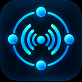

Node-to-Node Exchange — Your devices are the network.
Al instalar o usar NODEX, aceptas estos términos. Si no estás de acuerdo, no uses la aplicación.
NODEX es una herramienta de comunicación de voz punto a punto (P2P): conecta dispositivos directamente entre sí por Bluetooth/Wi-Fi Direct, sin servidor intermediario. Esto significa algo importante para tu responsabilidad como usuario: no existe forma técnica de que NODEX monitoree, modere, filtre, grabe o intervenga en ninguna conversación — ni siquiera si quisiéramos. No hay un servidor por el que pase el audio para poder revisarlo.
Aceptas usar NODEX únicamente de forma legal y respetuosa. Específicamente, aceptas que no usarás NODEX para:
Eres el único responsable del contenido de tus comunicaciones de voz y de las sesiones que crees o a las que te unas. Como se explica en el punto 2, no podemos revisar, moderar ni eliminar contenido de una conversación en curso — es tu responsabilidad, igual que con cualquier walkie-talkie físico o llamada telefónica.
NODEX está pensado para usarse mientras conduces (ej. en moto), pero tú eres el único responsable de operar cualquier vehículo de forma segura y de cumplir las leyes de tránsito de tu país sobre uso de dispositivos mientras conduces. NODEX no asume responsabilidad alguna por accidentes, lesiones o daños relacionados con el uso de la app mientras conduces o realizas cualquier otra actividad que requiera tu atención completa.
NODEX se ofrece "tal cual" ("as is"), sin garantías de ningún tipo. En particular, no garantizamos: alcance de conexión específico (depende del dispositivo, entorno y obstáculos), ausencia de interrupciones, disponibilidad continua del servicio, ni que el resultado sea adecuado para un propósito particular (por ejemplo, comunicación de seguridad crítica).
En la máxima medida permitida por la ley, NODEX y su desarrollador no serán responsables por daños indirectos, incidentales, especiales o consecuentes derivados del uso o la imposibilidad de usar la app, incluyendo — sin limitarse a — pérdida de comunicación en una situación de emergencia, accidentes, o conflictos entre usuarios de una misma sesión.
El desbloqueo del tier Pro se procesa enteramente a través de Google Play (o Apple App Store cuando exista). Reembolsos, disputas de cobro y gestión de la suscripción/compra se rigen por los términos de esa tienda, no por NODEX directamente.
Te otorgamos una licencia limitada, personal, no exclusiva y no transferible para usar NODEX en tus propios dispositivos, sujeta a estos términos y a las reglas de uso de la tienda desde la que la descargaste (Google Play, y Apple cuando aplique).
Además de estos términos, debes cumplir los términos de servicio de la tienda desde la que instalaste NODEX (Google Play Terms of Service, y los Apple Media Services Terms and Conditions cuando exista versión iOS).
Debes tener al menos 16 años para usar NODEX. Si eres menor de esa edad, no debes instalar ni usar la aplicación.
Podemos discontinuar NODEX (es un prototipo en desarrollo activo) o restringir su disponibilidad en cualquier momento, sin obligación de mantenimiento o soporte continuo.
Cualquier cambio se reflejará actualizando la fecha en la parte superior de esta página. El uso continuado de la app tras un cambio implica tu aceptación.
Estos términos se rigen por las leyes de la República de Chile. Cualquier disputa relacionada con el uso de NODEX se someterá a los tribunales competentes de Chile, sin perjuicio de los derechos irrenunciables que la ley de tu país de residencia pueda reconocerte como consumidor.
NODEX es una aplicación de comunicación de voz punto a punto (P2P) que funciona sin internet ni servidores propios, usando Bluetooth y Wi-Fi Direct para conectar dispositivos cercanos directamente entre sí.
Qué NO hace NODEX: no tiene cuentas de usuario, no tiene servidores propios, no muestra publicidad, no graba ni almacena tus conversaciones de voz, no vende ni comparte datos con terceros con fines publicitarios.
| Dato | Qué pasa con él |
|---|---|
| Alias/nombre que escribes | Se comparte únicamente con los dispositivos conectados a tu misma sesión, por el canal cifrado P2P. Nunca sale hacia ningún servidor. No se guarda una vez cierras la sesión. |
| Audio de voz | Se transmite en tiempo real, cifrado de extremo a extremo (AES-256-GCM), directo entre dispositivos. No se graba, no se almacena, no pasa por ningún servidor. |
| Ubicación | NODEX no lee ni comparte tu ubicación GPS. El permiso de ubicación que pide Android existe únicamente porque el sistema operativo lo exige para el descubrimiento Bluetooth/Wi-Fi en ciertas versiones — la app no consulta tus coordenadas. |
| Cámara | Se usa solo para escanear el código QR de invitación a una sesión. No se toman fotos, no se guardan ni suben imágenes. |
| Idioma elegido y estado de tu suscripción Pro | Se guardan únicamente en el almacenamiento seguro de tu propio dispositivo (Keystore de Android). Nunca se transmiten a nosotros ni a nadie. |
| Compra del Pro | La procesa enteramente Google Play. No vemos ni almacenamos tu información de pago — eso lo maneja Google según su propia política de privacidad. |
| Datos técnicos de diagnóstico (fallos/crashes, y eventos mínimos de uso como "se creó una sala" o "una sesión llegó a 2 participantes") | Recolectados por Firebase Crashlytics (fallos) y Aptabase (eventos de uso). Cada evento incluye automáticamente datos técnicos del dispositivo (versión de Android/iOS, versión de la app, idioma del sistema) — nunca tu alias, el código de sala, contenido de audio, tu ubicación, ni un identificador que te vincule entre sesiones. Sirven únicamente para detectar errores y medir estabilidad de la conexión, no para perfilarte ni para publicidad. |
Con nadie fuera de tu sesión P2P local, salvo los datos técnicos de diagnóstico descritos arriba. No existen servidores de NODEX que reciban el contenido de tus comunicaciones. Google Play Services gestiona la conectividad Nearby, Google Play gestiona las compras, y Google (Firebase Crashlytics) y Aptabase reciben únicamente los datos técnicos anónimos de la fila anterior — cada uno bajo su propia política de privacidad.
Cada mensaje y cada fragmento de audio viaja cifrado (AES-256-GCM) entre los dispositivos conectados.
No guardamos nada de tu sesión una vez termina, salvo el idioma elegido y el estado de tu compra Pro, ambos solo en tu dispositivo. Los datos técnicos de diagnóstico (fallos, eventos mínimos de uso) sí se retienen del lado de Firebase Crashlytics y Aptabase, según sus propias políticas de retención — no algo que nosotros controlemos ni almacenemos aparte.
Como no existen cuentas ni servidores, no hay datos nuestros que solicitar o eliminar — desinstalar la app elimina también lo guardado localmente.
NODEX no está dirigida a menores de 16 años y no solicita conscientemente datos de menores de esa edad. Al no requerir cuentas ni datos personales, no existe un mecanismo dentro de la app para verificar la edad más allá de esta restricción declarada.
Se notificarán actualizando la fecha de esta página.
By installing or using NODEX, you accept these terms. If you disagree, don't use the app.
NODEX is a peer-to-peer (P2P) voice communication tool: it connects devices directly to each other over Bluetooth/Wi-Fi Direct, with no server in between. This matters for your responsibility as a user: there is no technical way for NODEX to monitor, moderate, filter, record, or intervene in any conversation — not even if we wanted to. There's no server the audio passes through to review it.
You agree to use NODEX only legally and respectfully. Specifically, you agree not to use NODEX to:
You are solely responsible for the content of your voice communications and for any sessions you create or join. As explained in section 2, we cannot review, moderate, or remove content from an ongoing conversation — it's your responsibility, same as with any physical walkie-talkie or phone call.
NODEX is designed to be used while driving (e.g. on a motorcycle), but you are solely responsible for operating any vehicle safely and complying with your country's traffic laws about device use while driving. NODEX assumes no responsibility for accidents, injuries, or damages related to using the app while driving or doing any other activity requiring your full attention.
NODEX is provided "as is," with no warranties of any kind. In particular, we don't guarantee: a specific connection range (depends on device, environment, and obstacles), uninterrupted operation, continuous service availability, or fitness for a particular purpose (e.g. safety-critical communication).
To the maximum extent permitted by law, NODEX and its developer are not liable for indirect, incidental, special, or consequential damages arising from use or inability to use the app, including — without limitation — loss of communication during an emergency, accidents, or conflicts between users in the same session.
The Pro tier unlock is processed entirely through Google Play (or Apple's App Store once it exists). Refunds, billing disputes, and subscription/purchase management are governed by that store's terms, not by NODEX directly.
We grant you a limited, personal, non-exclusive, non-transferable license to use NODEX on your own devices, subject to these terms and the usage rules of the store you downloaded it from (Google Play, and Apple once applicable).
In addition to these terms, you must comply with the terms of service of the store you installed NODEX from (Google Play Terms of Service, and Apple Media Services Terms and Conditions once an iOS version exists).
You must be at least 16 years old to use NODEX. If you are younger, you must not install or use the app.
We may discontinue NODEX (it's a prototype under active development) or restrict its availability at any time, with no obligation of continued maintenance or support.
Any change will be reflected by updating the date at the top of this page. Continued use of the app after a change implies your acceptance.
These terms are governed by the laws of the Republic of Chile. Any dispute related to the use of NODEX will be submitted to the competent courts of Chile, without prejudice to any non-waivable consumer rights recognized under the laws of your country of residence.
NODEX is a peer-to-peer (P2P) voice communication app that works without internet or our own servers, using Bluetooth and Wi-Fi Direct to connect nearby devices directly to each other.
What NODEX does NOT do: no user accounts, no servers of our own, no ads, no recording or storing your voice conversations, no selling or sharing data with third parties for advertising.
| Data | What happens to it |
|---|---|
| The alias/name you type | Shared only with devices connected to your session, over the encrypted P2P channel. Never leaves toward any server. Not kept once you close the session. |
| Voice audio | Transmitted in real time, end-to-end encrypted (AES-256-GCM), directly between devices. Never recorded, never stored, never routed through any server. |
| Location | NODEX does not read or share your GPS location. The location permission Android requires exists only because the OS mandates it for Bluetooth/Wi-Fi discovery on certain versions — the app never queries your coordinates. |
| Camera | Used only to scan a session's invitation QR code. No photos are taken or stored, no images are uploaded anywhere. |
| Chosen language and Pro purchase status | Stored only in your device's secure storage (Android Keystore). Never transmitted to us or anyone else. |
| Pro purchase | Handled entirely by Google Play. We never see or store your payment information — Google handles that under its own privacy policy. |
| Technical diagnostic data (crashes/failures, and minimal usage events like "a room was created" or "a session reached 2 participants") | Collected by Firebase Crashlytics (failures) and Aptabase (usage events). Each event automatically includes technical device data (Android/iOS version, app version, system language) — never your alias, room code, audio content, location, or an identifier linking you across sessions. Used only to catch bugs and measure connection stability, never for profiling or advertising. |
No one outside your local P2P session, except the technical diagnostic data described above. There are no NODEX servers receiving the content of your communications. Google Play Services handles Nearby connectivity, Google Play handles purchases, and Google (Firebase Crashlytics) and Aptabase receive only the anonymous technical data from the row above — each under their own privacy policy.
Every message and audio frame is encrypted (AES-256-GCM) between connected devices.
Nothing from your session is kept once it ends, except your chosen language and Pro status, both device-local only. Technical diagnostic data (failures, minimal usage events) is retained on Firebase Crashlytics' and Aptabase's side, under their own retention policies — not something we control or store separately.
Since there are no accounts or servers, there's no data of ours to request or delete — uninstalling the app removes what's stored locally too.
NODEX is not directed at children under 16 and does not knowingly collect data from anyone younger. Since the app requires no accounts or personal data, there is no in-app mechanism to verify age beyond this stated restriction.
Will be reflected by updating this page's date.